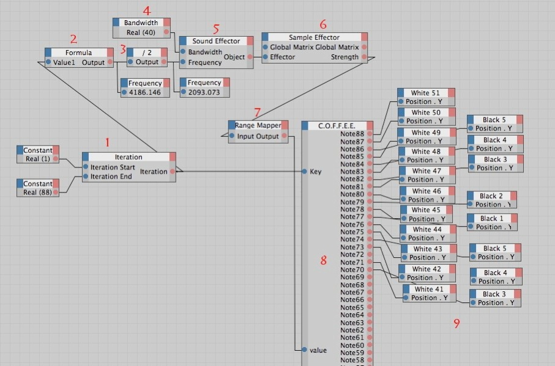
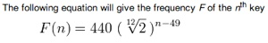
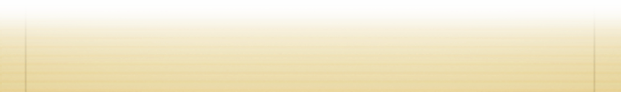

XPresso C.O.F.F.E.E.


Have you ever wished you could control the results coming out of the Sound Effector?
You’re not tied to control only clones of a Clone Effector.
I started this because I had to control the 88 keys of a piano.
So, let me explain this XPresso script
-
1.A piano has 88 notes, so I wanted 88 filters for the 88 frequencies. The output of the iteration is going to be 1,2,3,4 ....88 for every frame of your animation.
-
2.How do you get the nth note frequency? Simple
That’s the Formula in #2
For more information there is a good wikipedia article:
http://en.wikipedia.org/wiki/Piano_key_frequencies
Example here : if you feed 88 to the Formula (#2) 4186(hz) comes out.
-
3.Here you have to divide that value by 2. C4D R11 puts my notes at half their frequency in relation with their filtering !!
-
4.Bandwidth Ex here 50hz means 25hz on both sides of your frequency. You’ll have to play with that value. In my final project I used a variable bandwidth.
5&6. You feed the results as is in the Sound Effector, then the Sample Effector.
What comes out? The intensity (sound volume) for a certain frequency band.
-
7.Ranger Mapper Let’s say what comes out from the Sample Effector is a value between 0 and 1, you map that to 0 to -200 if you want the nth key to move down of y = -200
-
8.The next step is a big COFFEE node. What’s inside ? 88 if
Ex. if ( Key == 88){ Note88 = value ;} You can add special cases, like you don’t want the black notes to move down as much as the white ones.
-
9.The final step : You just feed the value in the position ‘y’ of your objects
Under the red ‘9’ you can imagine all the other notes down to 1.


